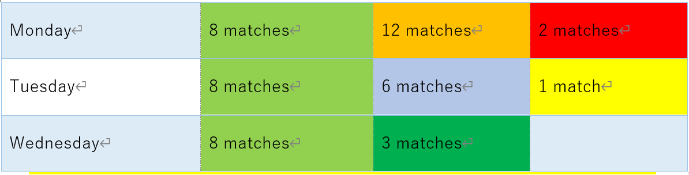

ISM Chess Tournament Official Website
General Information
Signup day: 20th, 21st and 22nd during lunchtime in D18
Maximum people:48 people
Time of competition: 13:25 to 13:55
*All the specific information is going to be on Microsoft Teams
Schedule(might change)
if schedule changes it will be notified on teams group chat

RULES
1. BASIC CHESS RULES.
2. Maximum 15minutes per person (using chess clock) *during match if the chess clock per person gets over 15minutes that person is going to lose immediately.
3. If person participates arrives late and if it wasn’t unavailable to finish before the end of lunch that person is going to lose. So, try coming earlier than time we start.
4. If game didn’t end on time, person who has more time on chess clock is going to lose.
5. Respect each other and no shouting (keep quiet as possible).
6. Maximum 2 spectators per each game going on and spectators aren’t allowed to advice or to help people playing. But on semifinal and final match there isn’t a limit of spectator
7. Play fairly and do not cheat.
8. No eating or drinking during this tournament.
9. Always follow the instructions of organizer/supervisor.